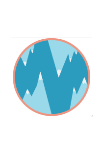
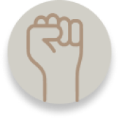

Femi-mutilate
L'excision
Waris Dirie
Fleur du désert
Autres projets
Galerie / Frise
Glossaire
Contact
Autres projets
Femin'In |MONTURET Matthieu
FeminsChool | Moramarco Lucas
Le féminisme à travers l'histoire | MERCIER Maxime

Mobilization for afghan women | Lavaine Iris
Femisimply | Meyer Arthur
FemiNorway | Lopez Andreas

Femin'history | Marchal Maëlle

Orientale | Mach-houty Elias
All for Words | MEURIE Thomas
Mots sur le féminisme | Lobato Loup
 Femi-mutilate
Femi-mutilate